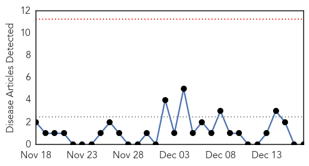

Cholera
30-Day Web Trend
0 alerts, 0 warnings

30-Day Twitter Trend
0 alerts, 0 warnings

Article Locations

Article Confidences

Top Articles:
- 0.967
- Watching the climate-cholera connection from orbit / Boing Boing
- 0.892
- Christian Club holds conference on Ebola and Cholera
- 0.806
- Climate Change Could Lead to More Cholera Outbreaks
- 0.786
- Deadly cholera outbreaks could increase with climate change
- 0.749
- Deadly Cholera Outbreaks Could Increase with Climate Change
- 0.613
- Child MPs lament lack of water, ablution facilities in schools
Top Tweets:
-
No tweets found for Dec 17, 2014
Hepatitis
30-Day Web Trend
0 alerts, 0 warnings

30-Day Twitter Trend
0 alerts, 0 warnings

Article Locations

Article Confidences

Top Articles:
-
No articles found for Dec 17, 2014
Top Tweets:
-
No tweets found for Dec 17, 2014